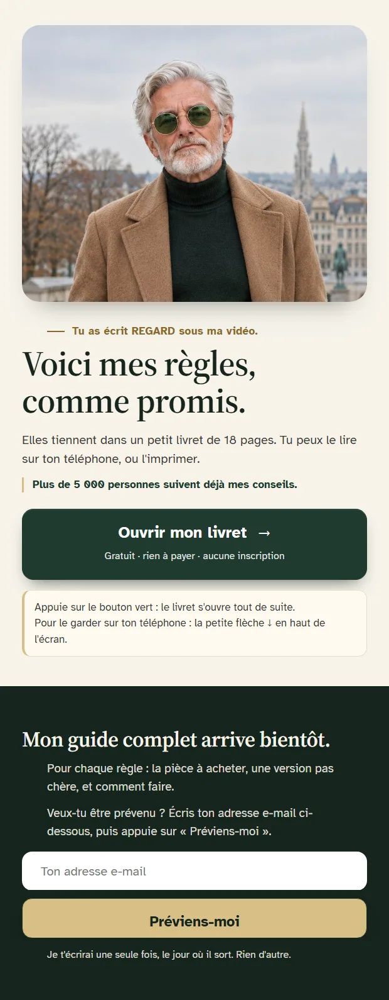
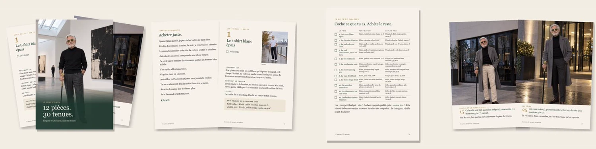
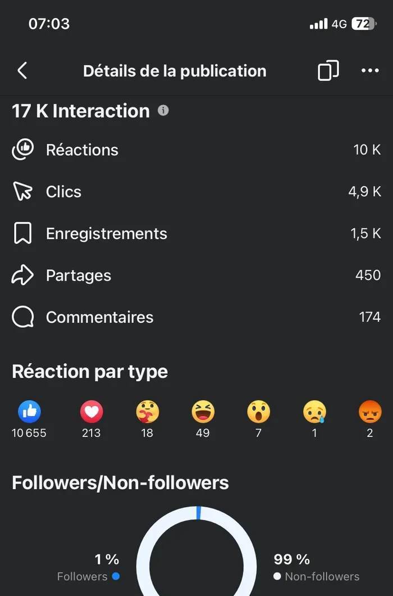
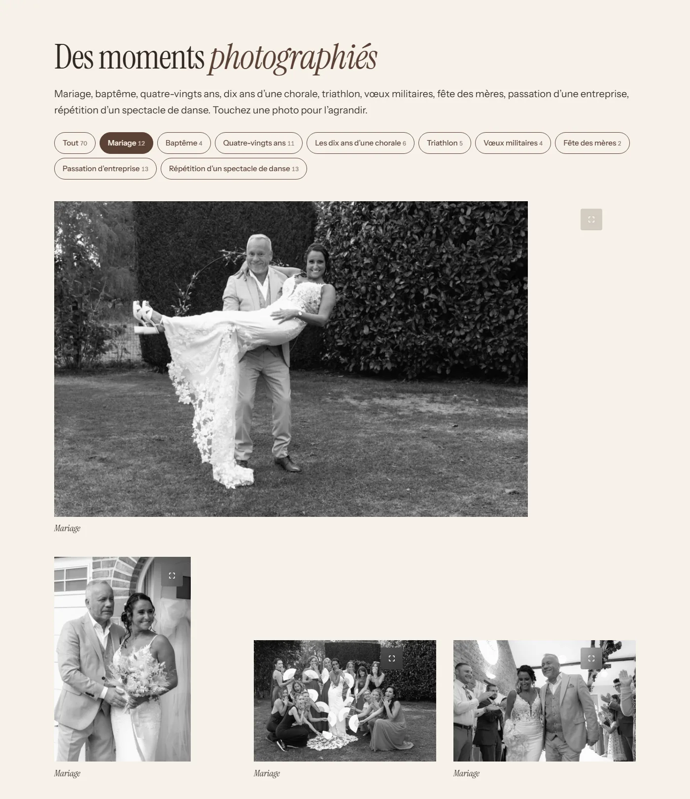
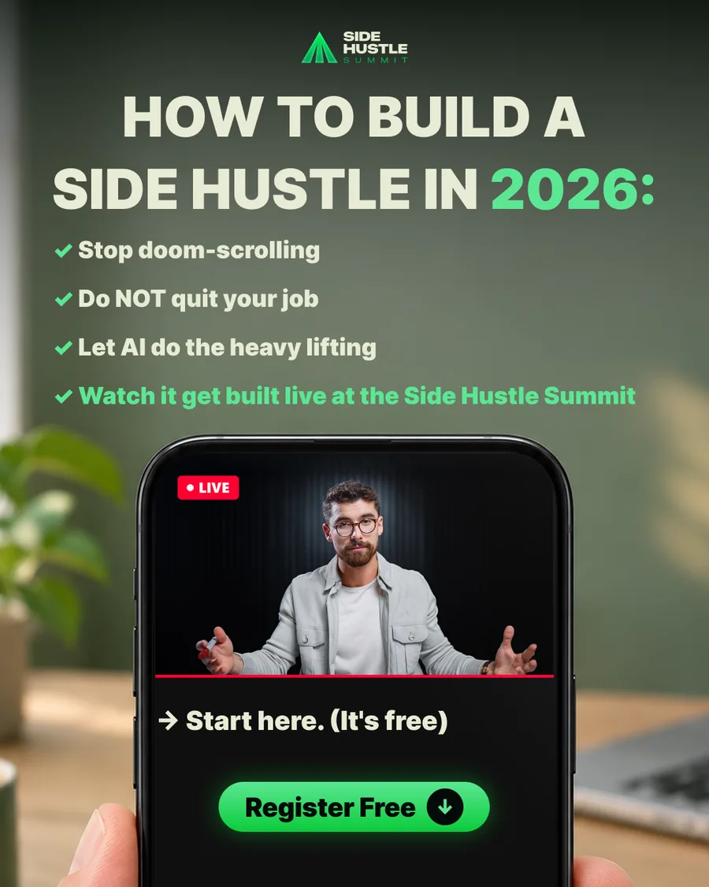
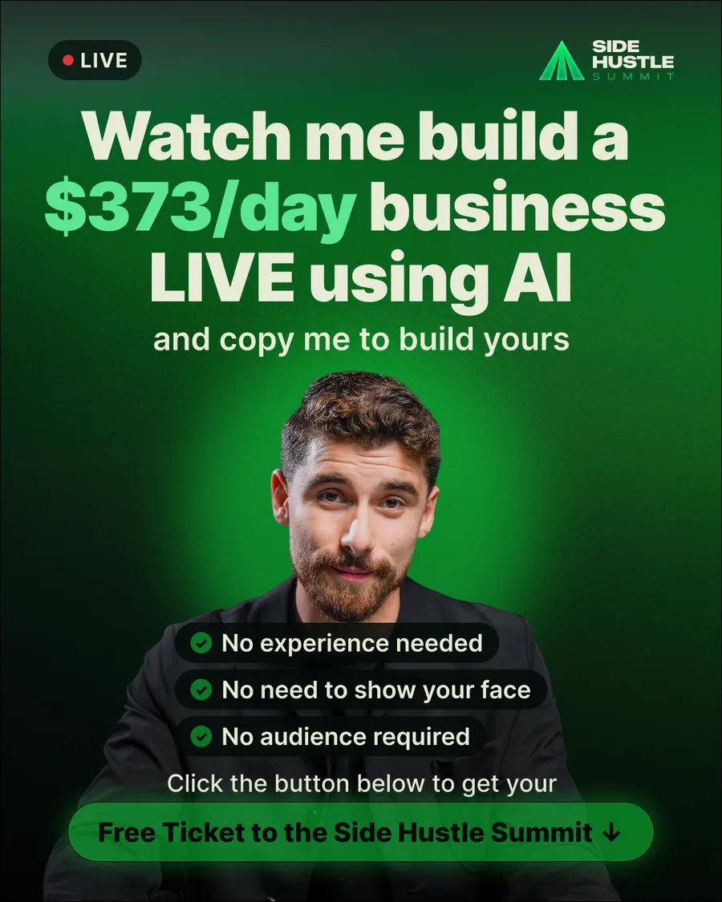
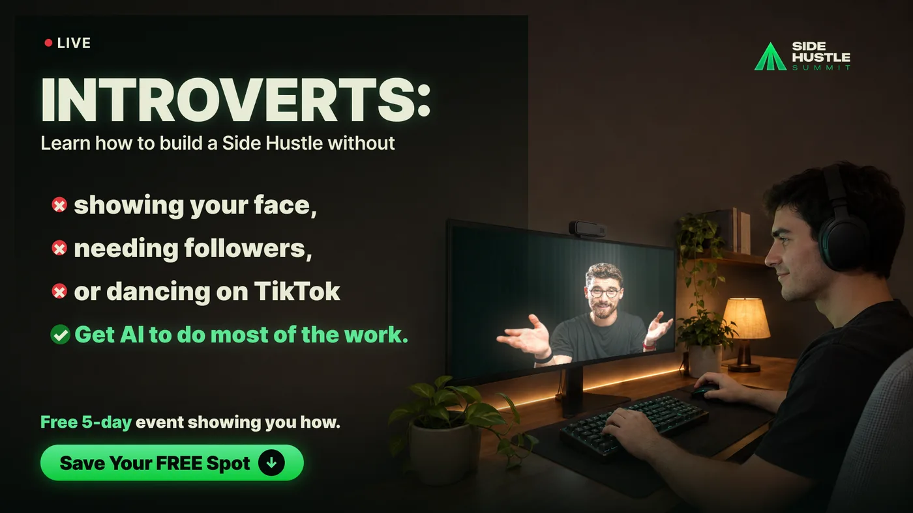

Thomas Fellmann, marketeur digital à Liège
Disponible tout de suite, en Belgique ou à distance
J’étudie un public, je lance des formats, je mesure ce qui marche et j’améliore.
Marketeur digital orienté stratégie de contenu et mesure des résultats. Je cherche un poste en équipe où prendre en charge ce travail pour un compte ou une marque.
Une décision, un résultatSur Owen, j’ai remplacé le verdict sur une célébrité par un « look du jour » que les spectateurs notent eux-mêmes. 3 40026 900 vues médianes par Verdict sur FacebookVerdicts publiés du 20 au 25 oct. 2026, puis du 26 au 31 oct. Voir le cas ↓Le rôle de l’IA : elle produit les images, la voix et le montage d’Owen. Je choisis le public, les formats, les accroches et ce qu’on arrête.


Deux études de cas, et une épreuve passée en un jour.
Ma façon de travailler
Quatre choses que vous pouvez attendre de moi dans une équipe. Chacune renvoie à sa preuve sur cette page.
- 01
J’apprends vite
Le 12 novembre, j’ai ouvert Figma pour la première fois à 8 h 30. À 22 h 45, j’envoyais huit publicités pour une épreuve de recrutement.
L’épreuve ↓ - 02
Je suis à l’écoute
Je lis ce que le public écrit et je le note tel quel : c’est ainsi que j’ai relevé les demandes « où acheter » sous les vidéos d’Owen. Pour le site de ma marraine, je suis parti de la situation de ses visiteurs, puis j’ai intégré ses retours sur la première version.
Les demandes ↓ - 03
Je me remets en question
Chaque dimanche, j’écris ce que je garde, ce que je change et ce que j’arrête. Le Verdict ne marchait pas : je l’ai refait, et il est passé de 3 400 à 26 900 vues médianes.
La décision ↓ - 04
Je prends des initiatives
Personne ne m’a demandé Owen : j’ai lancé le compte seul, de zéro, avec sa production, son guide et sa boutique. J’ai aussi refait bénévolement le site de ma marraine.
Le cas Owen ↓
Owen Rish : stratégie de contenu et intérêt commercial
Un personnage d’une soixantaine d’années, créé avec l’IA, qui conseille les hommes de plus de 50 ans sur leur style. Le public, les formats testés et les chiffres sont réels.
- Le problème
- Les hommes de 50 à 70 ans sont sur Facebook tous les jours, et peu de créateurs leur parlent de style. Il fallait trouver des formats qui les font réagir, puis vérifier s’ils veulent aller plus loin.
- Ce que j’ai fait
- J’ai étudié les comptes qui avaient déjà conquis ce public, défini trois formats et monté une chaîne de production à trois vidéos par jour. Chaque semaine, j’ai relevé les chiffres et refait ce qui ne marchait pas.
- Le résultat
- Un seul changement a fait passer le Verdict de 3 400 à 26 900 vues médianes sur Facebook. Au total : plus de 18 000 abonnés et 5,5 M de vues en un mois (tous réseaux, relevé du 16 nov. 2026).
Mon rôle : seul. Étude du public, personnage, scripts, production, publication et mesure.
La décision : laisser le spectateur noter
Mes premiers Verdicts notaient le look d’une célébrité. Avant de changer, j’ai étudié des comptes qui font noter des tenues : les plus vus montrent un look ordinaire et demandent sa note au spectateur. J’ai refait le format sur ce modèle.
- Avant
Owen note le look d’une célébrité.
3 400vues médianesVerdicts du 20 au 25 oct. - Après
Owen note « le look du jour », puis demande au spectateur sa propre note.
26 900vues médianesVerdicts du 26 au 31 oct.
Le look du jour est généré par l’IA et présenté comme tel, jamais comme celui d’un abonné. Vues Facebook des Verdicts, médianes par période, 2026.
- ×8les vues médianes du Verdict, avec « le look du jour »
- ×7les commentaires sous la Leçon, depuis l’appel « écris REGARD »
- 5,4abonnés pour 1 000 vues sur Facebook, une fois les formats refaits
Chaque dimanche, je relève les chiffres et j’écris ce que je garde, ce que je change et ce que j’arrête.
Médianes Facebook du 20 au 25 oct. contre celles du 26 au 31 oct. 2026 ; 5,4 abonnés pour 1 000 vues du 26 au 30 oct.
Ce que le public demande, signal par signal
Une vue ne dit pas qu’on veut acheter. Je sépare donc ce que mesure chaque chiffre : une demande de lien n’est pas une visite, et une visite n’est pas une vente.
Où acheter
2demandes spontanées pour savoir où acheter les vêtements montrés. Sur Instagram, le spectateur demande des liens. Sur Facebook, il demande où acheter à prix abordable.
Guide gratuit
≈ 100demandes par semaine : le mot « REGARD » écrit en commentaire sous les Leçons. Facebook seul, relevé du 8 nov. 2026.
Page du guide
1 258visites de la page du guide offert, au 14 nov. 2026.
Ventes
0vente documentée à ce jour. La boutique est construite et testée en aperçu.
« Un ou deux liens où nous pourrions les trouver »

« Où on peut acheter pas trop cher »
Vous devriez vous dire et nous dire ou on peut acheter pas trop cher ça serait pas mal aussi et pour femme egalement


Trois formats, figés une fois qu’ils ont marché
Une erreur de style, puis la correction. Le moteur de portée : 63 200 vues en médiane.
Owen donne une note sur dix à un look, puis demande la sienne au spectateur. Chacun compare sa note à celle d’Owen : deux fois plus de commentaires qu’« Arrête ça ».
Des conseils tirés d’études et de données reconnues : je n’invente rien et je ne vends pas à tout prix. La vidéo finit par un appel, écrire « REGARD » en commentaire : c’est l’entrée du tunnel de vente.
Médianes sur les publications Facebook d’au moins trois jours, du 20 oct. au 5 nov. 2026. Sur YouTube, les Shorts « Arrête ça » les plus vus sont regardés à 73 à 105 % de leur durée : les gens les revoient.
Les chiffres, jour par jour
Facebook a décollé au sixième jour. Le graphique couvre les vingt jours où je publiais trois vidéos par jour. À partir du 8 novembre, faute de temps et de moyens, je suis passé à une seule : les jours ne se comparent plus, je ne les mélange donc pas.
15 394 abonnés gagnés en 20 jours
- 26 oct. Les premières vidéos dépassent 100 000 vues par jour
- 27 oct. Je refais les formats : le Verdict des célébrités devient « le look du jour »
- 1 nov. Facebook remet en avant d’anciens reels : 1,5 M de vues en deux jours
Données quotidiennes exportées de Meta Business Suite le 8 novembre 2026. Le graphique s’arrête au 7 novembre, dernier jour à trois vidéos par jour.




Une publication, 48 heures
Une seule vidéo, partie seule : quinze fois les vues de mes publications habituelles, en deux jours.
- 88 482vues en 48 heures
- +1 409 %par rapport à mes publications habituelles
- 407abonnés gagnés par cette seule vidéo
- 90 %de spectateurs qui ne suivaient pas Owen
Statistiques Facebook de la publication, captures du 16 nov. 2026. La case des revenus est masquée.


Ce que les spectateurs ont écrit sous les vidéos
Personne n’a été payé ni sollicité. Ce qui revient le plus : des remerciements et des réactions au style.
Bravo, nous les femmes aussi ont regarde un homme, merçi pour vos vidéos
Le problème est que beaucoup de personnes ont perdu le sens de l'allure...de la séduction…
Merci pour tout vos conseils
10/10 très élégant.....
Ça c'est la classe !!!
la tenue classique ne meurt pas
Vrais commentaires Facebook, recopiés tels quels, fautes comprises. Noms et photos retirés ; captures conservées (4 nov. 2026).
Le rôle de l’IA dans la production
Personne ne fabrique 74 vidéos à la main en quatre semaines. L’IA fait le volume : les images d’Owen, sa voix et une partie du montage, dans une chaîne que je pilote avec Claude Code et Codex. Je prends les décisions : à qui on parle, quels formats vivent, quelles accroches, ce qu’Owen ne dirait jamais, et quand arrêter.
Recherche
Gros comptes et recherches du public, avant toute idée.
Brief
Accroche, texte et scène écrits d’abord.
Images
Générées, puis un score d’identité sur chacune.
Voix
ElevenLabs, une voix, une vitesse.
Montage
Des scripts Python coupent et calent les sous-titres.
Contrôles
Lèvres, volume, cadrage, puis publication.
Mesure
Relevé du dimanche ; décisions écrites.


Chaque scène est écrite avant d’être générée : le lieu, la lumière, et ce qu’un inconnu doit comprendre en une seconde.
Du commentaire à la page du guide : le parcours e-commerce
- Le problème
- Des vues ne font pas un revenu. Il fallait un chemin de la vidéo jusqu’à l’achat, et une mesure à chaque étape pour savoir où les gens décrochent.
- Ce que j’ai fait
- Un parcours en cinq étapes, construit seul : l’appel en fin de vidéo, le message privé, la page du guide offert, puis une boutique Shopify sur le domaine d’Owen, avec des sections sur mesure.
- Le résultat
- Mesuré jusqu’à la page du guide : environ 100 demandes par semaine (Facebook, relevé du 8 nov.) et 1 258 visites (au 14 nov.). La boutique est prête en aperçu : aucune vente n’est documentée à ce jour.
Mon rôle : seul. Structure de l’offre, sections sur mesure dans le thème Shopify et parcours jusqu’à l’achat.
- Leçon
La vidéo
Chaque Leçon finit par le même appel : écris « REGARD » en commentaire.
- ≈ 100
Le commentaire
Demandes par semaine sur Facebook (relevé du 8 nov.). Le mot-clé dit qui veut aller plus loin.
- 1 lien
Le message privé
Chaque demande reçoit en privé le lien vers le site d’Owen.
- 1 258
La page du guide
Visites au 14 nov. Un guide de 10 conseils, offert en échange d’une adresse e-mail.
- 3 formules
La boutique
De 19,99 à 39,99 €. Construite et testée en aperçu ; pas de vente documentée.
Quatre mécanismes de vente. Deux fonctionnent ici même : essayez-les.
Appuie sur ce que tu as déjà dans ton armoire.
0
282 €
Mêmes pièces, mêmes prix et mêmes règles de tenues que sur la boutique.
Le visiteur se vend le guide lui-même
Il coche ce qu’il possède déjà. La page compte combien des 30 tenues il peut porter aujourd’hui et ce que coûtent les pièces manquantes : le guide devient la réponse à son propre calcul.
Cochez deux ou trois pièces et regardez les chiffres.

Démonstration du mécanisme. Sur la boutique, la date vient du serveur, pas du visiteur.
Une raison de revenir chaque matin
24 portes, une par matin du 1er au 24 décembre. Le thème vérifie la date à Bruxelles et n’écrit une porte dans la page que le jour venu : l’acheteur revient chaque matin, et personne ne peut regarder la suite dans le code.
Changez la date et regardez les portes s’ouvrir.


Un choix guidé, pas une liste de prix
19,99, 29,99 et 39,99 €. Celle du milieu porte « mon conseil » et ajoute le calendrier de l’Avent ; les lignes verrouillées montrent ce que débloque chaque marche. Bonus de lancement avec date limite, satisfait ou remboursé 30 jours.
Donner avant de demander
Une fenêtre s’ouvre après 2,5 secondes et offre le guide d’Owen contre une adresse e-mail, avec 10 % sur le guide payant. Elle ne revient plus une fois inscrit.Construite du 4 au 6 novembre 2026. Captures prises en mode aperçu le 13 novembre.
Refonte WordPress : une offre claire, facile à réserver
- Le problème
- Le site de ma marraine, photographe thérapeutique, s’ouvrait sur une photo plein écran à côté d’un menu à un seul lien : le visiteur ne comprenait ni ce qu’elle propose ni comment réserver.
- Ce que j’ai fait
- Je l’ai reconstruit sur WordPress à partir d’une question : dans quelle situation le visiteur arrive-t-il, et quel est son prochain pas ? Quatre décisions en découlent, détaillées plus bas.
- Le résultat
- Le site est en ligne depuis le 20 novembre 2026 : valeriebruckmann.be. Valérie a relu la première version le 23 ; ses retours étaient en ligne le lendemain. Pas encore de mesure de visites ni de demandes : je n’avance donc aucun chiffre.
Mon rôle : tout, bénévolement : structure, mise en page sur WordPress, galeries, pages légales et mise en ligne.
Faites glisser la poignée pour comparer.


Avant : l’ancien accueil, relevé le 13 novembre 2026. Après : l’accueil en ligne, relevé le 24 novembre 2026.
Quatre décisions
Dire à quoi sert une séance
Avant : une photo plein écran, sans un mot. Après : « Se regarder autrement, se reconnecter à soi », puis une phrase qui dit ce qu’on vient y faire.
Entrer par son besoin
« Vous venez… pour moi, pour un événement, en groupe » : trois entrées, chacune vers la bonne séance. « Mariage » est devenu « Événements de vie » à la demande de Valérie.
Montrer avant d’expliquer
Une bande de photos sur l’accueil : chaque photo ouvre sa série, déjà filtrée (mariage, baptême, spectacle…). Les 91 photos envoyées par Valérie sont rangées par événement.
Réserver et rassurer
Deux boutons dès l’accueil, « Échanger avec Valérie » et « Trouver ma séance », puis des témoignages et des mentions légales. Les tirages sont montrés sans prix tant qu’elle ne les a pas validés : on les demande par le formulaire.


En complément · épreuve de recrutement, 12 nov. 2026
Huit publicités en une journée
- Le problème
- J’ai postulé chez Consulting.com (l’entreprise d’Iman Gadzhi) pour un poste de Marketing Designer. Après les premiers tests, l’épreuve pratique de leur recrutement arrive à 8 h 30 : créer quatre publicités en deux formats pour un événement gratuit de cinq jours, avec un seul objectif, les inscriptions. Délai : 24 heures.
- Ce que j’ai fait
- J’ai ouvert Figma pour la première fois ce matin-là. J’ai fixé trois règles avant de dessiner, puis décliné quatre idées en deux formats.
- Le résultat
- Huit visuels rendus à 22 h 45 le jour même, près de dix heures avant l’échéance. Leur décision de recrutement est en attente.
Mon rôle : mise en page, hiérarchie et système visuel des huit visuels. Consulting.com fournissait la marque, les photos de base et le texte, et imposait un brief pour A et B. Pour C et D, carte blanche : l’idée et la mise en scène sont les miennes.
- 8 h 30Le brief arrive
- 15 h 45Première publicité validée
- 22 h 10Huit visuels exportés
- 22 h 45Envoyé, dix heures avant l’échéance
Trois règles fixées avant de dessiner
Un seul élément géant
Un mot ou un chiffre par publicité, le reste petit : on comprend l’offre en une seconde.
Une lumière de cinéma
Un halo et un liseré lumineux sur le visage : le regard va d’abord à la personne.
Aucune boîte sauf le bouton
Une seule forme pleine dans l’image : l’œil sait où cliquer.
D’abord les deux idées où j’avais carte blanche, puis les deux du brief ; en 4:5, puis en 16:9. Cliquez sur une publicité pour l’agrandir. Ouvrir le fichier Figma






Les questions que vous vous posez
Un personnage créé avec l’IA, est-ce que ça compte ?
Le personnage est généré ; les spectateurs, non. Attention, une vue n’est pas une personne : sur Facebook, les 3,3 M de vues des 28 jours au 7 nov. 2026 viennent de 1,23 M de spectateurs, et 92,7 % de ces vues venaient de comptes qui ne suivaient pas Owen. Ce qui a produit ce résultat : l’étude du public, les formats, les accroches et la régularité.
Qu’est-ce qui vous distingue d’un autre junior ?
Je ne montre pas des exercices d’école : je montre un public réel, mesuré chaque semaine, et des décisions prises à partir de ces mesures. Quand un format ne marche pas, je le refais : le Verdict est passé de 3 400 à 26 900 vues médianes sur Facebook.
Combien ça a rapporté ?
Aucune vente n’est documentée à ce jour : la boutique est construite et testée en aperçu. Ce que je peux montrer, ce sont des signaux d’intérêt, chacun pour ce qu’il mesure : environ 100 demandes du guide gratuit par semaine (Facebook, relevé du 8 nov.), 1 258 visites de sa page (au 14 nov.) et deux spectateurs qui demandent d’eux-mêmes où acheter les vêtements.
Pourquoi chercher un emploi si le projet marche ?
Parce que le travail qui m’intéresse se fait en équipe, pour une marque qui a déjà des produits et des clients : avec des personnes en acquisition, en design et en vente. Owen montre la méthode que j’applique seul ; je veux l’appliquer à plus grande échelle.
Que savez-vous faire sans l’IA ?
L’IA fait le volume, pas les choix. Décider à qui parler, quelle accroche garder et quoi arrêter, c’est mon travail. Avant Owen, j’ai vendu en anglais tous les jours pendant un stage à Malte et animé des communautés en ligne de 10 000 à 40 000 membres.
Quelle expérience avez-vous en entreprise ?
Un stage marketing au Télévie (CHU de Liège), un stage de vente chez Celio à Malte, du bénévolat au service communication du CHR de la Citadelle et du freelance de 2021 à 2025, pour plus de 150 clients. Je n’ai pas encore eu de poste à temps plein en marketing : c’est ce que je cherche.
Quand, où, sous quel contrat ?
Tout de suite. À Liège, ailleurs en Belgique ou à distance. CDD, intérim ou CDI. Français langue maternelle, anglais B2.
Cinq ans à apprendre en faisant
Je travaille en construisant, en mesurant et en corrigeant. Avant Owen, j’ai animé des communautés en ligne de 10 000 à 40 000 membres, créé des chaînes YouTube pour un public américain et revendu plusieurs d’entre elles, et vendu en anglais tous les jours pendant un stage à Malte.
En parallèle, j’ai servi en salle de banquet pendant neuf ans et terminé mon bachelier en marketing à HELMo en 2026. Owen, c’est la première fois que j’ai tout réuni dans un seul projet.
- 2026Owen Rish : plus de 18 000 abonnés et 5,5 M de vues en un mois, seul
- 2026Bachelier en marketing, HELMo, Liège
- 2021–2025Freelance, plus de 150 clients via ComeUp : réseaux sociaux, vidéo, communautés en ligne, Shopify
- 2022Bénévole au service communication, CHR de la Citadelle, Liège : affiches internes
- 2024Stage marketing, Télévie au CHU de Liège : sponsoring des 24h Vélo
- 2023Stage vente, Celio, Sliema, Malte, en anglais
- 2017–2026Serveur en salle de banquet, Clos les Bruyères : un job étudiant tenu neuf ans
Français langue maternelle, anglais B2, notions de néerlandais.
Un poste ou un besoin concret en contenu ou en marketing digital ? Parlons‑en.
thomas.fellmnn@gmail.com. Basé à Liège. Disponible tout de suite, sur place ou à distance.